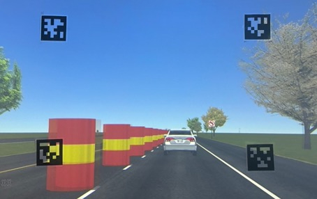
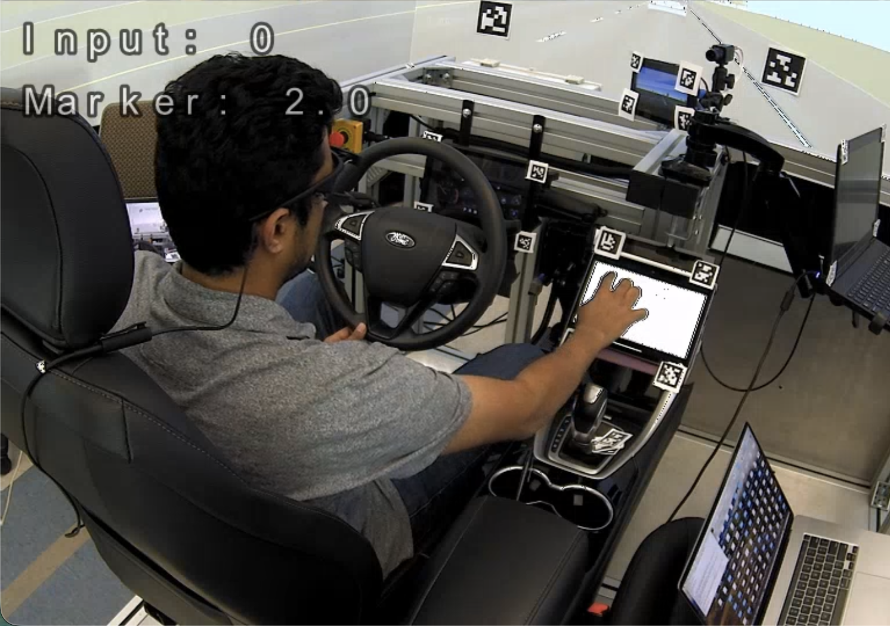
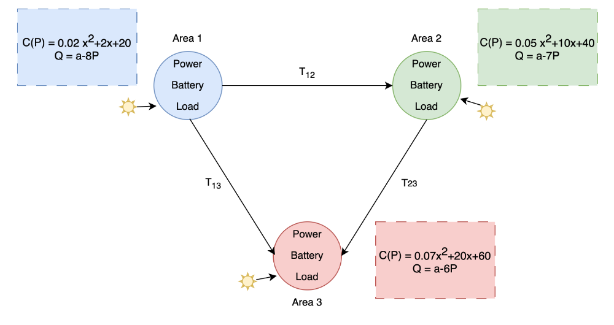
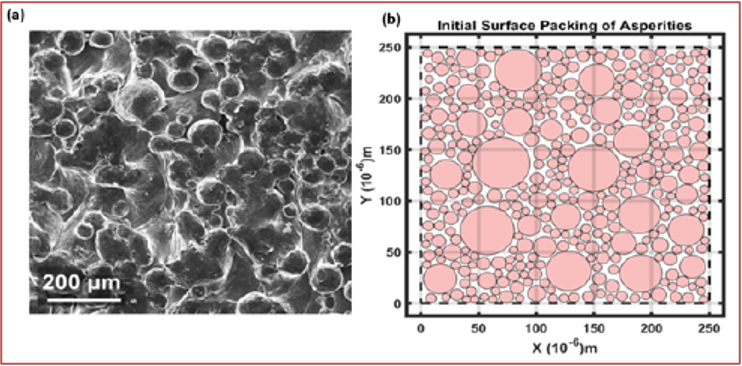
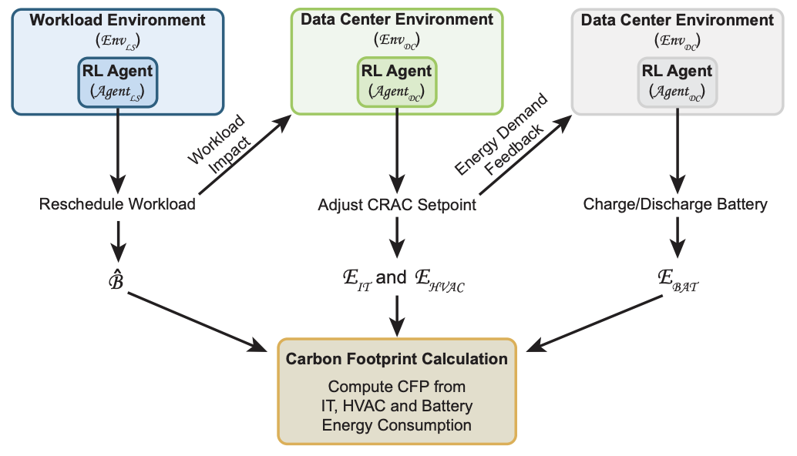
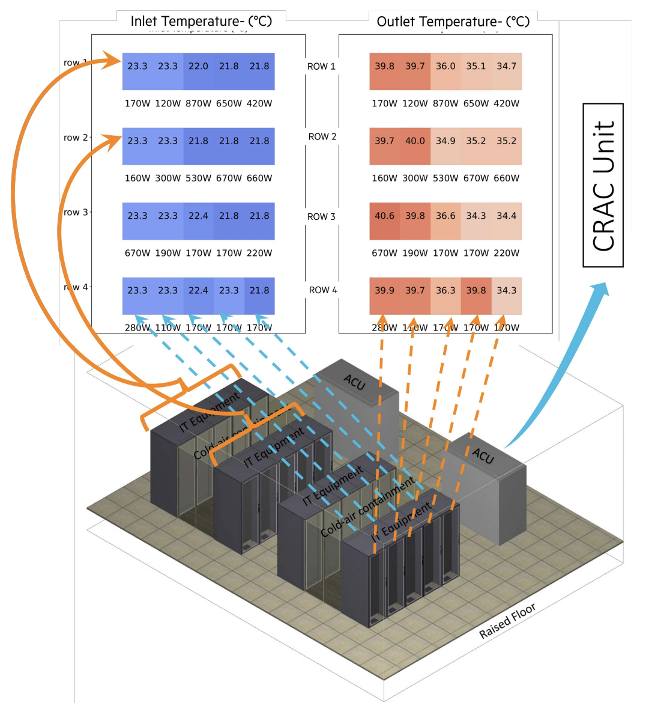
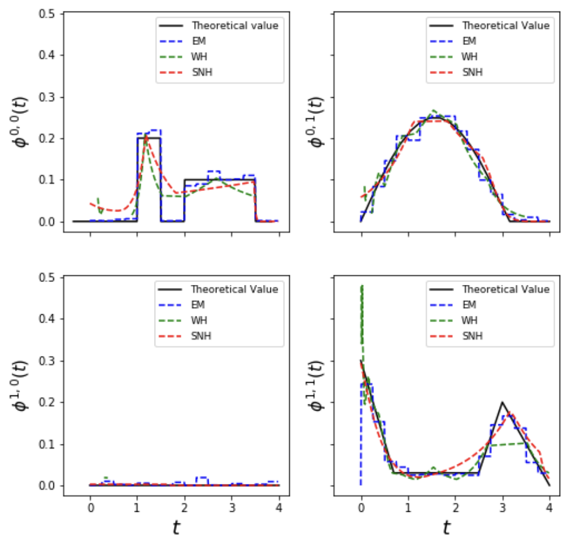

|
Lekhapriya Dheeraj Kashyap
PhD student at Texas A&M University, specializing in Human-Centered AI and reinforcement learning, with quantitative foundation in stochastic systems, machine learning, and probabilistic modeling.
Research focuses on interpretable, learning-based decision models (MDPs, POMDPs, semi-Markov processes) to infer latent states, preferences, and policies from human behavioral data.
Experience applying RL and multi-agent learning to human-centered systems, intelligent vehicle systems, finance, manufacturing, power grid operations, and data center operations, with industry experience at Wells Fargo and Hewlett Packard Enterprise.
Email /
CV /
Scholar /
LinkedIn /
Github
|
|
Texas A&M University (PhD Researcher)

State Representation and Preference Learning from Demonstrations
(In preparation)
Developing deep learning algorithms to learn compact latent encodings that preserve task-relevant structure from high-dimensional, multi-modal observations.
Jointly inferred system dynamics, agent preferences, and utility functions from raw expert demonstrations.

Inferring Hidden Attentional States in Driving: A Bayesian Approach to Modeling Distraction and Secondary Task Engagement
Lekhapriya Dheeraj Kashyap,
Zhide Wang,
Yanling Chang,
Maryam Zahabi,
Alfredo Garcia
Human Factors, 2026
Formulated driver attention as a Partially Observable Semi-Markov Decision Process and applied structural inverse reinforcement learning to infer latent distraction states, belief dynamics, and reward functions from behavioral data to support modeling of multitasking behavior and intervention.
A Structural Model of Attentional Effort Dynamics: Evidence From a Naturalistic Discrimination Task
Lekhapriya Dheeraj Kashyap,
Zhide Wang,
Yanling Chang,
Alfredo Garcia
Human Factors, 2025
Developed probabilistic latent-state models to infer unobserved context, attentional effort, and reward trade-offs from sequential, naturalistic decision data using Bayesian inference in partially observable settings.

Multi-Agent Reinforcement Learning for Decentralized Power Systems
Lekhapriya Dheeraj Kashyap,
Alfredo Garcia
Applied multi-agent reinforcement learning to decentralized power systems, addressing coordination,
scalability, and stochastic optimization under uncertainty while preserving local operational autonomy.

Actor-critic based multi-stage process planning and end point control in abrasive finishing operations
Adithyaa Karthikeyan,
Lekhapriya Dheeraj Kashyap,
Ceyhun Eksin,
Satish Bukkapatnam
Developed an actor–critic (PPO) framework for constrained decision-making in multi-stage manufacturing.
Integrated stochastic digital twins to enable adaptive control and joint optimization of process parameters to achieve precise surface roughness targets while minimizing energy and operational costs.

Sustaindc: Benchmarking for sustainable data center control
Avisek Naug,
Antonio Guillen-Perez,
Ricardo Luna Gutierrez,
Vineet Gundecha,
Cullen Bash,
Sahand Ghorbanpour,
Sajad Mousavi,
Ashwin Ramesh Babu,
Dejan Markovikj,
Lekhapriya Dheeraj Kashyap,
Desik Rengarajan,
Soumyendu Sarkar
Neurips, 2024
Developed configurable benchmarking environments for multi-agent reinforcement learning in data center operations,
modeling coordinated workload scheduling, cooling, and energy storage under shared resource constraints.
MARL algorithms are evaluated, demonstrating improved energy efficiency and carbon-aware control.

PyDCM: Custom Data Center Models with Reinforcement Learning for Sustainability
Avisek Naug,
Antonio Guillen-Perez,
Ricardo Luna Gutierrez,
Vineet Gundecha,
Sahand Ghorbanpour,
Lekhapriya Dheeraj Kashyap,
Dejan Markovikj,
Lorenz Krause,
Sajad Mousavi,
Ashwin Ramesh Babu,
Soumyendu Sarkar
BuildSys, 2023
Built a high-performance, configurable data center simulator with a Gymnasium compatible interface, enabling deep reinforcement learning based
cooling optimization and rapid evaluation of sustainable data center designs.

Shallow Neural Hawkes: Non-parametric kernel estimation for Hawkes processes
Sobin Joseph,
Lekhapriya Dheeraj Kashyap,
Shashi Jain
Journal of Computational Science, 2022
Derived unbiased stochastic gradient estimators for maximum likelihood optimization of multi-dimensional
Hawkes processes with neural network parameterization of excitation kernels.
Validated the approach on real-world finance data, demonstrating strong performance in high-frequency event modeling.
|
Teaching
|
Graduate Teaching Assistant, Quality Engineering – Fall 2021, Spring 2022, Fall 2022, Spring 2023, Fall 2025
Graduate Teaching Assistant, Uncertainty Modeling for Industrial Engineering – Fall 2023
Graduate Teaching Assistant, Decision and Risk Analysis – Spring 2025
|
|
{kind=link}